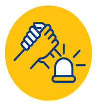
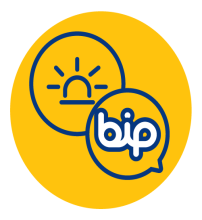

Turkcell'den
Afet Tedbirleri
Afet Tedbirleri
Türkiye’nin Turkcell’i olarak iyi günde olduğu gibi kötü günlerde de insanımızın yanında olmayı görev
bildik.
Bu yüzden afet anında teknolojilerimizle hızla aksiyon alıyor, yaralarımızı birlikte sarıyoruz.
Bu yüzden afet anında teknolojilerimizle hızla aksiyon alıyor, yaralarımızı birlikte sarıyoruz.

Acil İletişim Paketi
Afet bölgelerindeki kullanıcılarımızdan
borcu nedeniyle hattı kapalı ya da kısıtlı
hatlarını acil iletişim ihtiyaçlarını
karşılamak için kullanıma açıyoruz.
Bölgedeki kullanıcılarımıza ücretsiz
görüşme için dakika, SMS ve internet
içeren “Acil İletişim Paketi” ile arama
kurtarma ekiplerine “Kahraman Paketi”
ve “Kurtaran Paketi” tanımlıyoruz.
borcu nedeniyle hattı kapalı ya da kısıtlı
hatlarını acil iletişim ihtiyaçlarını
karşılamak için kullanıma açıyoruz.
Bölgedeki kullanıcılarımıza ücretsiz
görüşme için dakika, SMS ve internet
içeren “Acil İletişim Paketi” ile arama
kurtarma ekiplerine “Kahraman Paketi”
ve “Kurtaran Paketi” tanımlıyoruz.

Kesintisiz İletişim
Afet durumunda oluşacak yüksek ses
trafiğini karşılamak için şebekemizi en
yeni, yüksek kapasiteli ve dayanıklı
teknolojilerle yönetiyoruz. Afet
bölgelerinde zarar gören baz
istasyonlarımızı hızla hizmete alıyoruz.
Şebekemizi güçlendirmek için mobil baz
istasyonları kuruyoruz, jeneratörler ve
uydu hizmeti verebilen mobil araçlarla
kesintisiz iletişim sağlıyoruz.
trafiğini karşılamak için şebekemizi en
yeni, yüksek kapasiteli ve dayanıklı
teknolojilerle yönetiyoruz. Afet
bölgelerinde zarar gören baz
istasyonlarımızı hızla hizmete alıyoruz.
Şebekemizi güçlendirmek için mobil baz
istasyonları kuruyoruz, jeneratörler ve
uydu hizmeti verebilen mobil araçlarla
kesintisiz iletişim sağlıyoruz.

Afet Sonrası Destek
Arama kurtarma ekiplerine ve afet
sonrası toplanma alanlarına sabit
internet hizmetive mobil şarj istasyonları
sağlıyoruz.
sonrası toplanma alanlarına sabit
internet hizmetive mobil şarj istasyonları
sağlıyoruz.

Fatura Dondurma ve İptal
Afet bölgelerinde ev internetini ücretsiz
olarak dondurma, nakil etme veya iptal
olanağı sunuyoruz. İptal edilen modem
ücretlerini siliyoruz.
olarak dondurma, nakil etme veya iptal
olanağı sunuyoruz. İptal edilen modem
ücretlerini siliyoruz.
Afet Sırasında İletişim
Afetlerde ve acil durumlarda iletişimin kesintisiz sürdürülmesi hayati önem taşır.

Haberleşme
Haberleşme için SMS ve internet tabanlı
uygulamaları kullanın.
uygulamaları kullanın.

Kısa Görüşmeler
Acil durumlarda telefon görüşmesi
yapmaktan kaçının. Mecburi durumlarda
telefon görüşmelerinizi mümkün
olduğunca kısa tutun.
yapmaktan kaçının. Mecburi durumlarda
telefon görüşmelerinizi mümkün
olduğunca kısa tutun.
Ücretsiz Wifi
Bulunduğunuz bölgedeki ücretsiz Wifi
noktalarına bağlanın.
noktalarına bağlanın.

BiP Acil Durum Butonu
BiP Acil Durum Butonu ile acil durumda
ulaşmak istediğiniz kişilere nasıl
olduğunuzu konumunuzla birlikte tek
tıkla hem BiP hem SMS üzerinden
gönderin.
ulaşmak istediğiniz kişilere nasıl
olduğunuzu konumunuzla birlikte tek
tıkla hem BiP hem SMS üzerinden
gönderin.
Afet Öncesinde
Planlama
Planlama


Diğer ipuçları ve bilgiler için AFAD web sitesini ziyaret edin.
www.afad.gov.tr
Turkcell’den Afet Çalışmaları